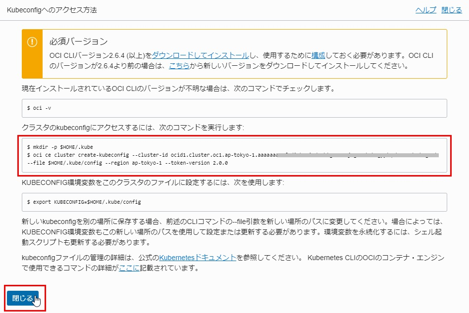

Terraformを使用したOKEクラスタの作成¶
このステップでは、仮想クラウド・ネットワーク、サブネット、アクセスリストなどの必要なすべてのネットワーク要素を含む、Terraformを使用してOKEクラスタを作成する方法について説明します。
Note
OCIではResource ManagerというTerraformベースのリソース管理サービスをご利用いただけます。Resource ManagerはTerraformスクリプトを使用して「infrastructure-as-code」モデルを通じてリソースのインストール、構成、および管理を支援します。 今回はTerraformスクリプトの編集を経験して頂くためにResource Managerは使用しません。
下記手順で実行します。
- 新しいターミナルウィンドウを開き、git repositoryフォルダーのterraform_okeフォルダーに移動する
- terraform.tfvarsを編集し、収集したOCIDなどの情報を入力する
- terraform init、terraform plan、terraform applyを実行して、OKEクラスタを作成する
- 作成されたファイルworkshop_cluster_kubeconfigを使用して、kubectlコマンドでOKEにアクセスする
1. 新しいターミナルウィンドウを開き、git repositoryフォルダーのterraform_okeフォルダーに移動する¶
cd terraform_oke
2. terraform.tfvarsを編集し、収集したOCIDなどの情報を入力する¶
OKEクラスタの構成を、Terraformのパラメータファイルterraform.tfvarsに記述する設定によって変更することができます。（※ワークショップでは、できる限りデフォルト値を設定し、変更する必要なパラメータを少なめにしました）
ベースとなるパラメータファイルをコピーして、これを編集していきます。ステップ2で収集した情報を使用して、OCIDなどの情報を入力します。
cp terraform.example.tfvars terraform.tfvars
vi terraform.tfvars
対象のパラメータは以下のとおりです。
| key | value |
|---|---|
| tenancy_ocid | テナントOCID |
| compartment_ocid | コンパートメントOCID |
| fingerprint | API Signingキーのフィンガープリント |
| private_key_path | API SigningのPrivateキーのローカルパス |
| user_ocid | ユーザーOCID |
| region | リージョン識別子 |
以下に、パラメータファイルの記述例を示します。
# OCI authentication
tenancy_ocid = "ocid1.tenancy.oc1..xxxxxxxxxxxxxxxxxxxxxxxxxxxxxxxxxxxxxxxxxxxxxxxxxxxxxxxxxxxx"
compartment_ocid = "ocid1.compartment.oc1..xxxxxxxxxxxxxxxxxxxxxxxxxxxxxxxxxxxxxxxxxxxxxxxxxxxxxxxxxxxx"
fingerprint = "00:11:22:33:44:55:66:77:88:99:aa:bb:cc:dd:ee:ff"
private_key_path = "~/.oci/oci_api_key.pem"
user_ocid = "ocid1.user.oc1..xxxxxxxxxxxxxxxxxxxxxxxxxxxxxxxxxxxxxxxxxxxxxxxxxxxxxxxxxxxx"
region = "ap-tokyo-1"
3. terraform init、terraform plan、terraform applyを実行して、OKEクラスタを取得する¶
このディレクトリでterraform initを実行すると、すべての依存関係がダウンロードされます。
terraform planを実行して構成を検証します。
terraform applyを実行してインフラストラクチャを起動します。
「yes」と入力します。
下記2つファイルが作成されます。
- terraform.tfstate：このファイルには、作成された要素の詳細が含まれています。Terraformでは、構成ファイルを更新するときにこのファイルが必要になり、インフラストラクチャにこの変更を適用する必要があります。
- workshop_cluster_kubeconfig：これは、新しく作成したKubernetesクラスタに接続するための構成ファイルです。
4．作成されたファイルworkshop_cluster_kubeconfigを使用して、kubectlコマンドでOKEにアクセスする¶
kubectlコマンドを使用してOKEクラスタが作成されているか検証します。
kubectl get nodes --kubeconfig=workshop_cluster_kubeconfig
数分待って、以下のような内容が表示されます。
NAME STATUS ROLES AGE VERSION
10.0.24.2 Ready node 5m v1.13.5
これで、OKEクラスタの作成は完了しました。
補足：ブラウザからkubeconfigを取得する方法¶
OKEクラスタへアプリケーションをデプロイするためにはkubeconfigファイルが必要です。kubeconfigファイルは先ほどTerraformで作成したworkshop_cluster_kubeconfigファイルを利用する以外に、ブラウザからもkubeconfigを取得することが可能です。
OCIコンソール右上のハンバーガーメニューを展開し、「開発者サービス」⇒「コンテナ・クラスタ(OKE)」に移動して、コンパートメントを選択し、次は該当OKEクラスタを選択して、「Kubeconfigへのアクセス」ボタンをクリックします。
赤枠で囲まれたコマンドをメモします。「閉じる」ボタンをクリックします。

続いて Service Brokerを使用したATPの作成 に進んでください。